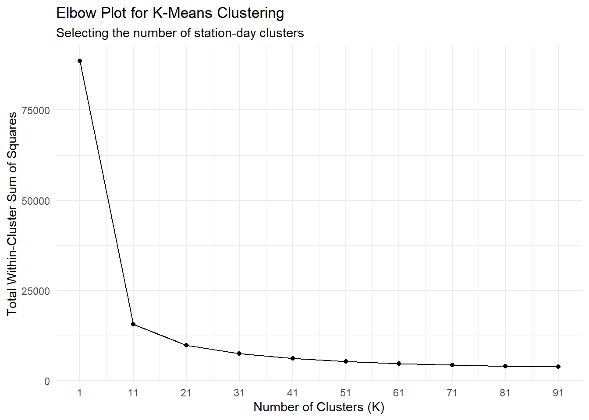
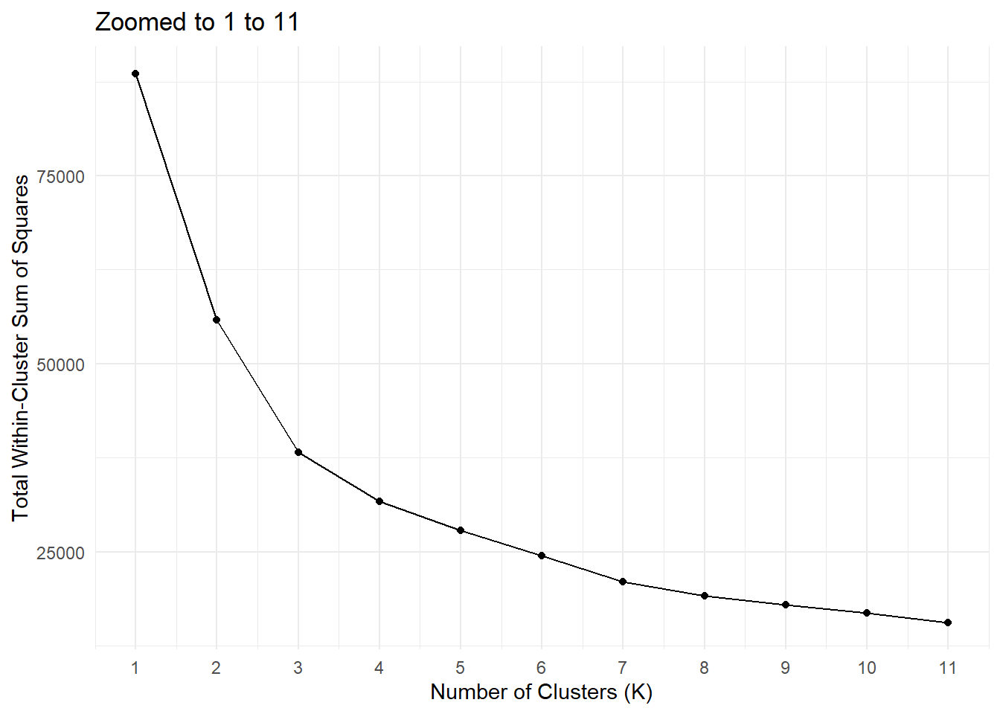
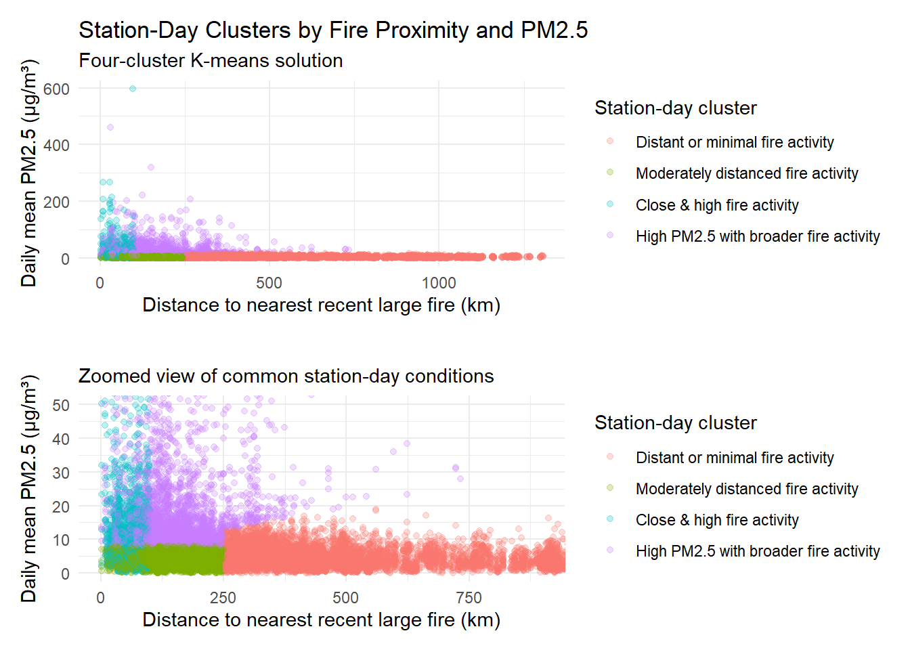

Code
library(tidyverse)
library(tidymodels)
library(patchwork)library(tidyverse)
library(tidymodels)
library(patchwork)analysis_valid <- read_csv(
"data/processed/analysis_valid.csv",
show_col_types = FALSE
)Are there distinct types of station days based on wildfire exposure and PM2.5 conditions?
cluster_data <- analysis_valid |>
filter(!is.na(nearest_fire_km_14d)) |>
select(
mean_pm25,
nearest_fire_km_14d,
fire_count_100km_7d,
fire_count_250km_14d
)cluster_data_scaled <- cluster_data |>
mutate(across(everything(), ~ log1p(.x))) |>
mutate(across(everything(), ~ as.numeric(scale(.x))))
summary(cluster_data_scaled) mean_pm25 nearest_fire_km_14d fire_count_100km_7d
Min. :-2.68845 Min. :-5.083872 Min. :-0.316
1st Qu.:-0.61566 1st Qu.:-0.674101 1st Qu.:-0.316
Median :-0.07969 Median :-0.004313 Median :-0.316
Mean : 0.00000 Mean : 0.000000 Mean : 0.000
3rd Qu.: 0.48599 3rd Qu.: 0.688893 3rd Qu.:-0.316
Max. : 6.72777 Max. : 2.114454 Max. :10.439
fire_count_250km_14d
Min. :-0.9160
1st Qu.:-0.9160
Median :-0.1035
Mean : 0.0000
3rd Qu.: 0.7090
Max. : 3.9406 set.seed(555555)
k_values <- seq(from = 1, to = 100, by = 10)
total_withinss <- map_dbl(
k_values,
~ kmeans(cluster_data_scaled, centers = .x, nstart = 20)$tot.withinss
)
elbow_data <- tibble(k = k_values, total_withinss = total_withinss)
elbow_plot <- elbow_data |>
ggplot(aes(x = k, y = total_withinss)) +
geom_line() +
geom_point() +
scale_x_continuous(breaks = k_values) +
labs(
title = "Elbow Plot for K-Means Clustering",
subtitle = "Selecting the number of station-day clusters",
x = "Number of Clusters (K)",
y = "Total Within-Cluster Sum of Squares"
) +
theme_minimal()
elbow_plot
ggsave("figures/06_elbow_plot_1.png", plot = elbow_plot)set.seed(555555)
k_values_2 <- seq(from = 1, to = 11, by = 1)
total_withinss_2 <- map_dbl(
k_values_2,
~ kmeans(cluster_data_scaled, centers = .x, nstart = 20)$tot.withinss
)
elbow_data_2 <- tibble(k = k_values_2, total_withinss = total_withinss_2)
elbow_plot_2 <- elbow_data_2 |>
ggplot(aes(x = k, y = total_withinss)) +
geom_line() +
geom_point() +
scale_x_continuous(breaks = k_values_2) +
labs(
title = "Zoomed to 1 to 11",
x = "Number of Clusters (K)",
y = "Total Within-Cluster Sum of Squares"
) +
theme_minimal()
elbow_plot_2
ggsave("figures/06_elbow_plot_2.png", plot = elbow_plot_2)After log-transforming and standardizing the clustering variables, the elbow plot showed a clearer bend around K = 4. The bend was vague around 3 and 4 but since the reduction from the left of 4 was more sustantial than the right, four clusters were selected.
set.seed(555555)
final_kmeans <- kmeans(
cluster_data_scaled,
centers = 4,
nstart = 50
)
# How many observations ended up in each cluster
table(final_kmeans$cluster)
1 2 3 4
7668 2368 2982 9133 Join the original data and the cluster label.
# Add cluster label variable to original data
cluster_results <- cluster_data |>
mutate(cluster = factor(final_kmeans$cluster))
cluster_results |> head()cluster_summary <- cluster_results |>
group_by(cluster) |>
summarise(
station_days = n(),
cluster_mean_pm25 = mean(mean_pm25),
cluster_median_pm25 = median(mean_pm25),
mean_nearest_fire_km = mean(nearest_fire_km_14d),
median_nearest_fire_km = median(nearest_fire_km_14d),
mean_fire_count_100km_7d = mean(fire_count_100km_7d),
median_fire_count_100km_7d = median(fire_count_100km_7d),
mean_fire_count_250km_14d = mean(fire_count_250km_14d),
median_fire_count_250km_14d = median(fire_count_250km_14d),
.groups = "drop"
)
print(cluster_summary, width = Inf)# A tibble: 4 × 10
cluster station_days cluster_mean_pm25 cluster_median_pm25
<fct> <int> <dbl> <dbl>
1 1 7668 4.29 4.24
2 2 2368 12.4 7.04
3 3 2982 20.4 13.2
4 4 9133 4.58 4.12
mean_nearest_fire_km median_nearest_fire_km mean_fire_count_100km_7d
<dbl> <dbl> <dbl>
1 150. 147. 0
2 64.2 68.9 1.61
3 156. 142. 0.00235
4 525. 430. 0
median_fire_count_100km_7d mean_fire_count_250km_14d
<dbl> <dbl>
1 0 3.35
2 1 7.55
3 0 3.61
4 0 0
median_fire_count_250km_14d
<dbl>
1 2
2 5
3 2
4 0Observing the data:
Cluster 1 has a moderate distance to fires with the nearest fire being 147 km and median of 2 fires.
Cluster 2 has a close distance to fires with the nearest fire being 68.9 and have a lot of fires within 250km on average having a median of 5.
Cluster 3 has a high mean and median of PM2.5 but nearly no fires within 100 km.
Cluster 4 is far from fires or have minimal fire activity; also has low PM2.5.
# Naming clusters
cluster_results <- cluster_results |>
mutate(
station_day_cluster = recode(
cluster,
`1` = "Moderately distanced fire activity",
`2` = "Close & high fire activity",
`3` = "High PM2.5 with broader fire activity",
`4` = "Distant or minimal fire activity"
),
station_day_cluster = factor(
station_day_cluster,
levels = c(
"Distant or minimal fire activity",
"Moderately distanced fire activity",
"Close & high fire activity",
"High PM2.5 with broader fire activity"
)
)
)cluster_plot <- cluster_results |>
ggplot(aes(x = nearest_fire_km_14d, y = mean_pm25, color = station_day_cluster)) +
geom_point(alpha = 0.25) +
labs(
title = "Station-Day Clusters by Fire Proximity and PM2.5",
subtitle = "Four-cluster K-means solution",
x = "Distance to nearest recent large fire (km)",
y = "Daily mean PM2.5 (µg/m³)",
color = "Station-day cluster"
) +
theme_minimal()
cluster_plot_zoomed <- cluster_plot +
coord_cartesian(xlim = c(0, 900), ylim = c(0, 50)) +
labs(
title ="",
subtitle = "Zoomed view of common station-day conditions"
)
cluster_plot / cluster_plot_zoomed
K-means identified four distinct patterns based on PM2.5 concentration and recent wildfire occurrence nearby. One cluster represents distant or minimal fire activity, having low concentrations of PM2.5. Another contains close and numerous recent fires with quite high PM2.5 concentrations. However, the cluster with the highest PM2.5 is not associate to have the closest fire, showing that either distance and fire counts alone do not explain all PM2.5 conditions, or we must expand further in terms of distance.
Therefore, the clustering results support the broader finding that wildfire proximity is associated with PM2.5 but that is not consistent and other environment factors likely play crucial roles.